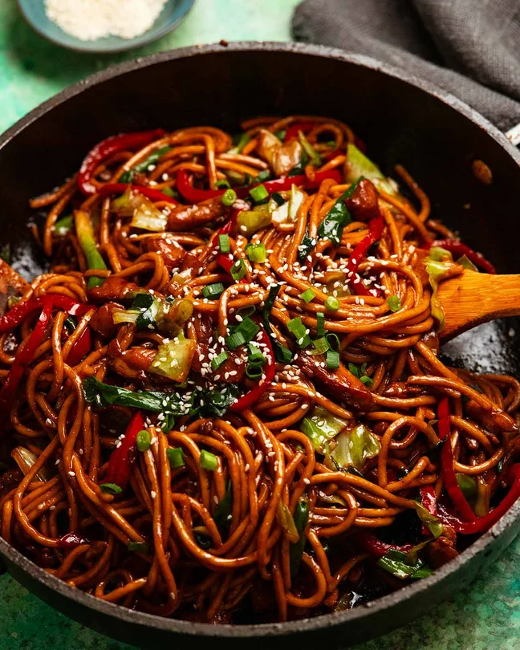

Hokkien Noodles
Home
Cabonara

Description
I know that I’ve repeatedly bleated about how you can throw “any vegetables you want!” into stir fried noodles. But if speed is of the essence, and you want a good amount of vegetables in your dinner, you do actually need to think about what vegetables are quick to chop, quick to cook, won’t make your stir fry watery, and you know you can get at any grocery store
Ingredients
- 500g/ 1 lb hokkien noodles
- 350g/ 12 oz chicken thighs
- 2 tbsp canola oil
- 2 garlic cloves
- 2 tbsp light soy sauce
Steps
- Sauce – Mix the sauce in a small bowl.
- Briefly marinate chicken – Toss the chicken with 1 1/2 tbsp of the Sauce. Marinate for 10 minutes while you prepare the noodles and vegetables.
- Rinse noodles – Prepare the noodles per the packet directions (soak in boiling water or briefly boil). Drain in a colander then rinse briefly under tap water
- Sear chicken – Heat the oil in a large non-stick pan over high heat until very hot (mine is 30cm/12", Note 9 re: wok). Add the chicken and toss for 1 minute. Add the garlic and white part of the green onion, then toss for another 1 minute or until the surface of the chicken is sealed (but still a bit raw inside)
- Cook veg & noodles – Add the capsicum and cabbage. Toss for 2 minutes until the cabbage is mostly wilted. Add the green part of the green onions, noodles and sauce. Toss for 1 1/2 to 2 minutes until the noodles are stained a lovely mahogany colour.
- Serve immediately, sprinkled with sesame seeds and green onion if desired!